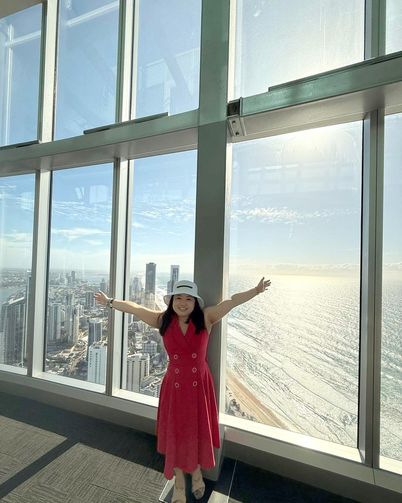

一套能計算天命的方法—— 關於你這一生注定要活出的使命， 以及如何走上去。 它的源頭，是一個真實走過苦難的人。
那是一個關於人為什麼會受苦、又該如何走出來的答案。
我們相信，每一個願意成長的靈魂，都不該獨自面對自己的功課。在這段路上，他值得被陪伴、被理解、被支持。
我們想陪這些人，一步一步走向真正快樂而豐裕的生活——心靈是安定的，物質是充足的，活得踏實、活得滿足。

Fiona 出生於香港一個普通家庭，七口人擠在一間三十多平方米的公屋裡長大。從小她就被家人說「笨」、說「沒用」，她努力想被愛、想被看見，換來的卻常常是責備。那種「我這麼想對你們好，為什麼還是不被理解」的感覺，跟了她很多年。
後來她到澳洲國立大學（ANU）讀人類學，原以為人生會走上另一條路。然而真正改變她的，不是學術，是接下來那十年。
她把家人的錢投進婚姻與生意，自己拼命工作卻拿不到一分錢；最需要被支持的時候，最親近的人卻轉身離開，甚至在背後說她「瘋了」。生意最後破產，留下幾十萬的債務，她被迫搬進治安惡劣的廉租房，睡在客廳，靠救濟廚房的一碗熱湯撐過最冷的日子。
她付出了一切，卻被最信任的人背叛，落到一無所有。她不停地問：我從來沒有害過人，為什麼會走到這裡？
就在那段最黑暗的時間，她聽到一把聲音，輕輕對她說——
一開始她很害怕，以為是妖魔鬼怪。但那把聲音告訴她——祂，正是她一直在尋找的神。
那把聲音叫她立刻打開電腦，把祂說的每一個字記下來。她照做了。當她寫完、重讀一遍時，整個人愣住了：那是一套關於「人世間的痛苦從何而來、又該如何解開」的答案。她開始用這些答案，一步一步重建自己的人生，也慢慢覺醒——原來那些苦難不是懲罰，而是一連串還沒解開的功課；原來她一直把自己放到最低、用付出去換愛，才是真正的痛點所在。她終於學會：先看懂自己、先愛自己，才有能力去愛別人。
她把這套答案整理成一個有系統、可傳承的方法。經營至今 16 年，她教過的學生無數，當中不少人一路跟隨多年——他們留下來，不是因為被說服，而是因為真的在自己身上看到了改變。
時至今日，在沒有做過任何營銷的情況下，她不但靠幫助別人維生，更能供養孩子到國際學校讀書，活出一個豐盛而滿足的人生。
她常說：她不是要你相信她，而是希望你有一天，能像她一樣，親自看懂自己。
人生所有的卡住，來自三個「不知道」： 不知道自己的天命、 不知道天命如何實踐、 不能持續實踐天命。 天命，是你這個靈魂這一生注定要活出的使命與意義。 走在天命上，順與快樂是自然結果。
大部分人認識自己，靠的是別人的評價、過去的經驗，或者一次又一次的試錯。靈魂解碼系統提供的是另一條路——用你的出生資料，把你的天命計算出來。
它不是要預測你的未來，而是讓你看懂自己本來要走的路——你的天賦、你的功課、你一再卡住的地方，其實都指向同一個方向。
它最特別的地方，是答案來自系統本身的運算，而不是某一位老師當下的感覺或解讀。同樣的出生資料，不論誰來算，得出的結果都一致。
這讓 Soul Code 不只是一套靠天賦的玄學，而是一套可以被學習、被驗證、被一代一代傳承下去的方法。老師的角色，是把這些答案連結到你真實的生活裡。
到那個時候，你改變的不只是自己的人生——你會成為別人的光，成為這個世界慢慢變好的過程裡，不可或缺的一部分。